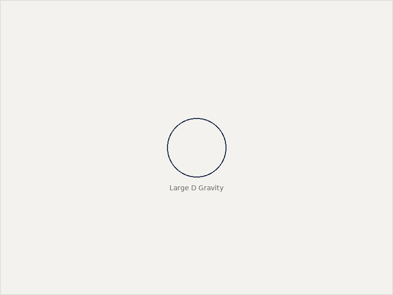
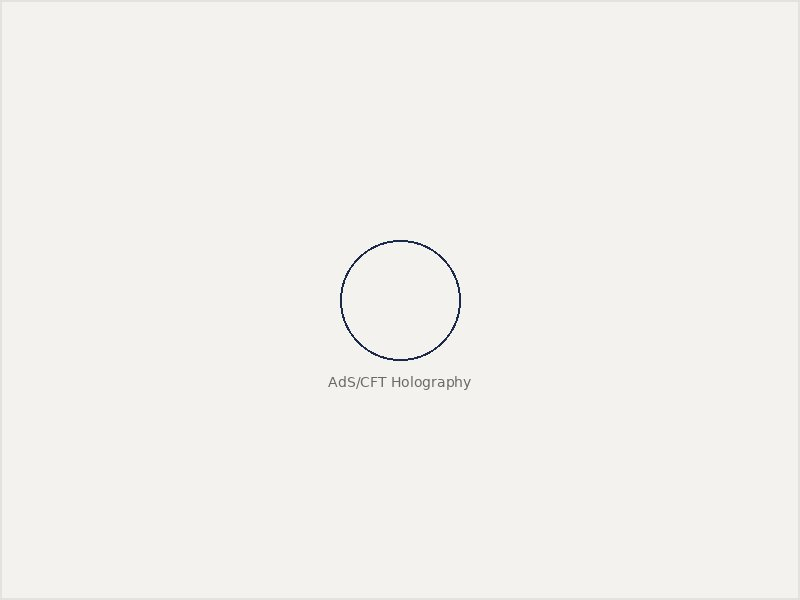

What I work on
My research sits at the intersection of gravity, holography, and computation — using analytical and numerical tools, increasingly aided by machine learning, to understand the dynamics of black holes and other compact objects.

The large number-of-dimensions limit of General Relativity
When the number of spacetime dimensions D is taken to be very large, Einstein's equations simplify dramatically: gravity becomes localized near horizons and behaves like an effective theory of a membrane embedded in flat space. This "large D" expansion turns notoriously hard problems — black hole instabilities, collisions, and the fate of cosmic censorship — into tractable effective equations. My work has used this limit to study black string instabilities, black hole fusion and fission, and violations of cosmic censorship in higher dimensions.
Simulating strong-field gravity
Many of the most interesting regimes of gravity — black hole mergers, exotic compact object collisions, the nonlinear development of instabilities — have no closed-form solution and have to be evolved numerically. I work on numerical relativity simulations of these systems, including head-on mergers of Proca stars, charged black hole binaries, and the nonlinear development of strong cosmic censorship violation, often building surrogate waveform models that make these simulations usable for gravitational-wave parameter estimation.

Black holes as holographic duals
The AdS/CFT correspondence relates gravity in Anti-de Sitter space to a conformal field theory living on its boundary. I have used this duality, together with the large D limit, to study the holographic duals of evaporating black holes, plasma polarization and Love numbers of black branes, and high-energy holographic collisions — connecting gravitational dynamics to the language of strongly coupled quantum field theory.
Physics-informed neural networks as differential equation solvers
A more recent thread of my research uses physics-informed neural networks (PINNs) to solve the differential equations that govern black hole perturbation theory and modified gravity — including the Teukolsky and Regge–Wheeler–Zerilli equations, and quasinormal mode problems beyond General Relativity. These methods offer a fast, flexible alternative to traditional numerical solvers and are increasingly useful for modeling protoneutron star oscillations and other time-dependent strong-gravity systems.
From simulations to observable signals
Ultimately, much of this work feeds into gravitational-wave astrophysics: building waveform models for exotic compact objects and hyperbolic encounters, understanding parameter-estimation biases when comparing models to data, and connecting strong-field simulations to what current and future detectors can actually observe.